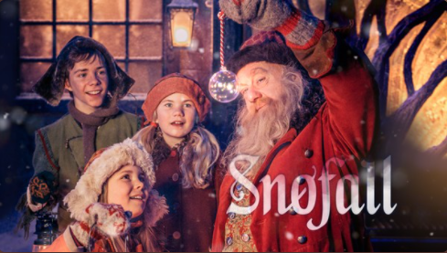
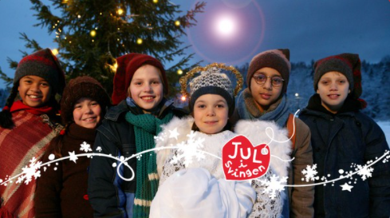
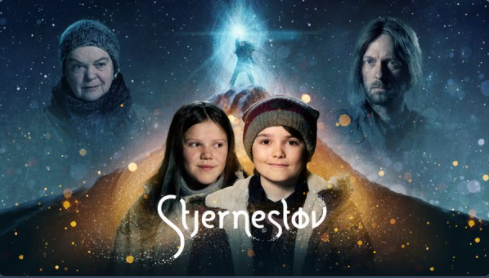
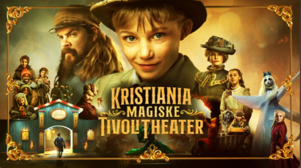
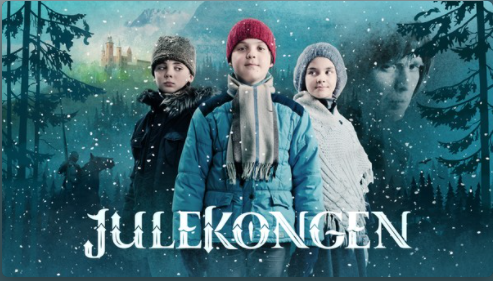

Serier

Snøfall
En foreldreløs jente i en trist verden. Et eventyrland fullt av magi og kjærlighet.
En hemmelig portal skiller dem.

Jul i Svingen
Det skjer mye i Svingen i desember, både vanlige jule- forberedelser og mer uvanlige aktiviteter.

Stjernestøv
Foreldrene blir skilt og Jo må flytte.
En dag slukker Nordstjerna, og Jo oppdager at det bor ei jente med magiske krefter på loftet.

Kristiania magiske tivolitheater
Et storslått juleeventyr fra den gangen hovedstaden vår het Kristiania,
om fattiggutten Luka og et magisk teater i enden av et tivoli.

Julekongen
Kevin oppdager en tunnel som fører til en ridderdal uten vinter og snø.
Julekalender om vennskap, riddere og magiske krefter.